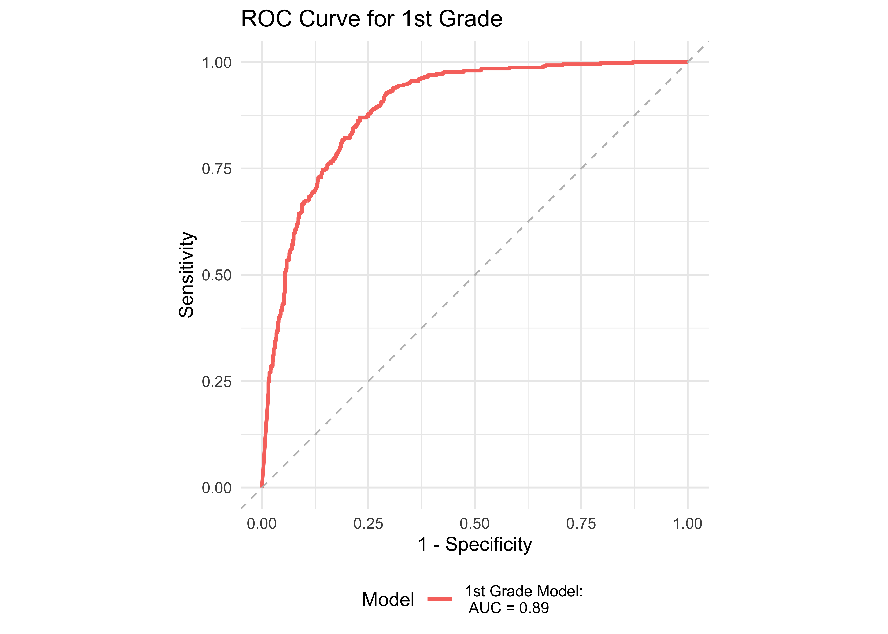

| Grade | Early Reading Risk Level | N | Proportion of Risk Level |
|---|---|---|---|
| Kindergarten | High Risk | 36 | 35.6% |
| Kindergarten | Some Risk | 22 | 21.8% |
| Kindergarten | Low Risk | 43 | 42.6% |
| 1 | High Risk | 222 | 26% |
| 1 | Some Risk | 177 | 20.8% |
| 1 | Low Risk | 454 | 53.2% |
27 Validity: Dyslexia Screening and Sub-typing
From the perspective of neuroscience, written language is an incredible feat. Prompted by reading instruction, the brain constructs specialized circuits to translate visual symbols into their sounds and meanings (Yeatman 2022; Yeatman and White 2021). The brain has evolved dedicated circuits for spoken language and visual recognition processes because these skills have been integral to survival for eons. Written language, however, was invented by human societies only a few thousand years ago. It is unlikely that the brain evolved dedicated circuits for written language. The brain develops the circuitry for literacy through experiences with written language beginning in infancy thanks to the brain’s capacity to change in response to new experiences, a principle known as “plasticity”. This means that a child’s experiences in the classroom sculpt their neural circuitry of literacy.
However, this circuitry is not built from scratch. Literacy is grounded in circuits that evolved for component processes, such as spoken language and visual recognition. As a child begins to learn to read, brain circuits that evolved for visual recognition are reorganized to process text and route this information to the brain’s spoken language network. This process depends on instruction and practice. But for some children, the process of learning to read presents a substantial struggle. For children with Developmental Dyslexia, struggles with foundational reading skills—decoding, word recognition and reading speed/efficiency specifically—tend to persist throughout schooling unless they receive additional support and/or evidence-based intervention. The goal of a dyslexia screener is to identify students who would benefit from additional support in foundational reading skills. The promise of plasticity is that once they are identified and provided with intensive, targeted, systematic support in foundational reading skills, children with Developmental Dyslexia can develop the ability to decode and read efficiently.
There are a variety of definitions of dyslexia, but they all share this characteristic: persistent struggles with decoding, word recognition and establishing fluent reading.
International Dyslexia Association (IDA) Definition of Dyslexia
The International Dyslexia Association published one of the most widely used definitions of dyslexia which was developed through a consensus building process in partnership with the National Center for Learning Disabilities (NCLD), and the National Institute of Child Health and Human Development (NICHD) (Lyon, Shaywitz, and Shaywitz 2003).
From the IDA website: “Dyslexia is a specific learning disability that is neurobiological in origin. It is characterized by difficulties with accurate and/or fluent word recognition and by poor spelling and decoding abilities. These difficulties typically result from a deficit in the phonological component of language that is often unexpected in relation to other cognitive abilities and the provision of effective classroom instruction. Secondary consequences may include problems in reading comprehension and reduced reading experience that can impede growth of vocabulary and background knowledge.”
While this definition has been widely used for the past two decades, there has been a recent push to revise the definition of dyslexia to a) make diagnosis simpler, b) make it easier to get support to the students that need it and c) acknowledge heterogeneity and the multifactorial nature of dyslexia.
Proposed revisions to the definition of dyslexia
Catts et al. (2024) argue for an alternative, “prevention-based approach that focuses on the early identification of children at risk for dyslexia and the provision of instruction/intervention that is matched to their needs.” Catts et al. (2024) specifically propose revisions to the definition that incorporate other, known causal factors beyond phonological awareness.
Snowling and Hulme (2024), on the other hand, argue that a revised definition is unnecessary and propose that causal arguments need not go into the definition.
Finally, Elliott and Grigorenko (2024) propose a “simpler definition that describes the primary difficulty, avoids reference to causal explanation, unexpectedness, and secondary outcomes, and redirects practitioner and policymaker focus to the importance of addressing and meeting the needs of all struggling readers.”
The proposed revision of Elliott and Grigorenko (2024) only references challenges with word reading accuracy and speed, making Dyslexia more straightforward to diagnose and intervene.
27.1 Dyslexia screening based on foundational reading skills: Criterion validity
To assess sensitivity and specificity of ROAR Foundational Reading Skills (see Section 9.1) as an indicator of dyslexia risk, we ran two studies of criterion validity—one with a reading assessment that is among the most commonly used in schools, and one with the most widely-used measure in dyslexia research:
Criterion validity
- A study in collaboration with two, large and diverse California school districts that uses FAST™ earlyReading and FAST™ CBMreading risk categories as the criterion measures. FAST™ earlyReading and FAST™ CBMreading are individually administered screeners that classify students into three different risk levels for reading difficulties: “Low Risk”, “Some Risk”, and “High Risk”. For kindergarten we calculate prediction accuracy, sensitivity and specificity of ROAR Foundational Reading Skills relative to FAST™ earlyReading. For first grade, we calculate prediction accuracy, sensitivity and specificity of ROAR Foundational Reading Skills relative to FAST™ earlyReading and FAST™ CBMreading. For second grade we calculate prediction accuracy, sensitivity and specificity of ROAR Foundational Reading Skills relative to FAST™ CBMreading.
- A study with participants recruited from around the United States that uses the Woodcock Johnson Basic Reading Skills Composite Index (WJ BRS) as the criterion measure. WJ BRS is the most widely used measure in dyslexia research for identifying characteristics of dyslexia and is one of the most widely used measures in special education and clinical practice for diagnosing dyslexia. For this study of criterion validity, we use a threshold of the 25th percentile based on national norms to define students at risk or with indications of dyslexia and we calculate prediction accuracy, sensitivity and specificity of ROAR Foundational Reading Skills relative to this criterion.
27.1.1 Criterion Validity Study 1: FastBridge
27.1.1.1 Sample demographics
This study was carried out in collaboration with two California school districts. Demographics of the sample are provided in Table 22.4.
Table 27.1 and Table 27.2 show the distribution of students in the sample across FAST™ earlyReading and FAST™ CBMreading risk categories. Note that FAST™ CBMreading categories of “College Pathway” and “Exceeding Expectations” have been included in the category “Low Risk” for the sake of this analysis.
| Grade | CBMreading Risk Level | N | Proportion of Grade |
|---|---|---|---|
| 1 | High Risk | 201 | 22.5% |
| 1 | Some Risk | 163 | 18.3% |
| 1 | Low Risk | 528 | 59.2% |
| 2 | High Risk | 187 | 19.3% |
| 2 | Some Risk | 151 | 15.6% |
| 2 | Low Risk | 633 | 65.2% |
27.1.1.2 ROAR-Word
Since dyslexia is identified based on persistent difficulties with word reading accuracy and fluency, word reading measures are generally the most efficient screeners though additional measures of Letter Sound Knowledge, Phonological Awareness, Rapid Automatized Naming and Visual Processing can also improve sensitivity/specificity, particularly for younger students at the early stages of learning to read. Thus, we begin by computing prediction accuracy, sensitivity and specificity for ROAR-Word. We then examine whether additional measures lead to more accurate predictions. Finally, we examine each additional measure in isolation.
Figure 27.1 shows an ROC curve for kindergarten and 1st grade computed from a logistic regression model with ROAR-Word as a predictor of the FAST™ earlyReading “High Risk” category. Figure 27.2 shows and ROC curve for 1st and 2nd grades computed from a logistic regression model with ROAR-Word as a predictor of the FAST™ CBMreading “High Risk” category. All models in 1st and 2nd grade achieved exceptional accuracy with area under the curve (AUC) greater than 0.9 for both criterion measures. In kindergarten accuracy was lower, which is expected for a model that does not include other screening measures. Table 27.3 and Table 27.4 report sensitivity, specificity and accuracy by each demographic. Table 27.5 and Table 27.6 report sensitivity, specificity and accuracy by each demographic.

| Demographic Group | Grade | AUC | Best Specificity | Best Sensitivity | Specificity (Sensitivity at 0.9) | Sensitivity at 0.9 | N |
|---|---|---|---|---|---|---|---|
| English Learner | Kindergarten | 0.71 | 0.75 | 0.76 | 0.25 | 0.90 | 25 |
| Female | Kindergarten | 0.77 | 0.79 | 0.77 | 0.53 | 0.93 | 49 |
| Male | Kindergarten | 0.77 | 0.58 | 0.93 | 0.54 | 0.93 | 52 |
| White | Kindergarten | 0.76 | 0.59 | 0.95 | 0.59 | 0.90 | 48 |
| Hispanic Ethnicity | Kindergarten | 0.81 | 0.67 | 0.97 | 0.67 | 0.91 | 38 |
| Free or Reduced Lunch | Kindergarten | 1.00 | 1.00 | 1.00 | 1.00 | 0.92 | 27 |
| All | Kindergarten | 0.78 | 0.57 | 0.95 | 0.57 | 0.91 | 102 |
| Demographic Group | Grade | AUC | Best Specificity | Best Sensitivity | Specificity (Sensitivity at 0.9) | Sensitivity at 0.9 | N |
|---|---|---|---|---|---|---|---|
| English Learner | 1 | 0.87 | 0.75 | 0.88 | 0.57 | 0.91 | 196 |
| Female | 1 | 0.90 | 0.81 | 0.87 | 0.75 | 0.91 | 578 |
| Male | 1 | 0.89 | 0.68 | 0.93 | 0.69 | 0.90 | 606 |
| White | 1 | 0.84 | 0.66 | 0.93 | 0.66 | 0.90 | 441 |
| Hispanic Ethnicity | 1 | 0.85 | 0.78 | 0.80 | 0.58 | 0.90 | 341 |
| Black or African American | 1 | 0.82 | 0.67 | 1.00 | NA | NA | 20 |
| Multiracial | 1 | 0.84 | 0.78 | 0.85 | 0.52 | 0.92 | 143 |
| SPED | 1 | 0.95 | 1.00 | 0.83 | 0.73 | 0.91 | 57 |
| Free or Reduced Lunch | 1 | 0.88 | 0.90 | 0.72 | 0.68 | 0.90 | 256 |
| All | 1 | 0.89 | 0.77 | 0.87 | 0.72 | 0.90 | 1194 |
| Demographic Group | Grade | AUC | Best Specificity | Best Sensitivity | Specificity (Sensitivity at 0.9) | Sensitivity at 0.9 | N |
|---|---|---|---|---|---|---|---|
| English Learner | 1 | 0.86 | 0.73 | 0.88 | 0.64 | 0.91 | 196 |
| Female | 1 | 0.92 | 0.81 | 0.94 | 0.82 | 0.90 | 578 |
| Male | 1 | 0.92 | 0.82 | 0.89 | 0.78 | 0.90 | 606 |
| White | 1 | 0.89 | 0.75 | 0.94 | 0.76 | 0.91 | 441 |
| Hispanic Ethnicity | 1 | 0.86 | 0.75 | 0.87 | 0.67 | 0.90 | 341 |
| Asian | 1 | 0.92 | 0.73 | 1.00 | 0.73 | 0.94 | 297 |
| Multiracial | 1 | 0.90 | 0.80 | 1.00 | 0.80 | 0.93 | 143 |
| SPED | 1 | 0.91 | 0.94 | 0.90 | 0.81 | 0.90 | 57 |
| Free or Reduced Lunch | 1 | 0.89 | 0.75 | 0.88 | 0.70 | 0.91 | 256 |
| All | 1 | 0.92 | 0.78 | 0.94 | 0.80 | 0.90 | 1194 |
| Demographic Group | Grade | AUC | Best Specificity | Best Sensitivity | Specificity (Sensitivity at 0.9) | Sensitivity at 0.9 | N |
|---|---|---|---|---|---|---|---|
| English Learner | 2 | 0.81 | 0.73 | 0.81 | 0.53 | 0.90 | 248 |
| Female | 2 | 0.93 | 0.77 | 0.97 | 0.81 | 0.90 | 596 |
| Male | 2 | 0.90 | 0.87 | 0.80 | 0.72 | 0.91 | 630 |
| White | 2 | 0.89 | 0.74 | 1.00 | 0.79 | 0.91 | 278 |
| Hispanic Ethnicity | 2 | 0.89 | 0.87 | 0.81 | 0.68 | 0.90 | 336 |
| Asian | 2 | 0.88 | 0.84 | 0.87 | 0.54 | 0.93 | 252 |
| Multiracial | 2 | 0.83 | 0.77 | 0.91 | 0.38 | 0.91 | 170 |
| SPED | 2 | 0.91 | 0.78 | 0.90 | 0.65 | 0.90 | 65 |
| Free or Reduced Lunch | 2 | 0.91 | 0.90 | 0.82 | 0.76 | 0.90 | 272 |
| All | 2 | 0.91 | 0.84 | 0.86 | 0.78 | 0.90 | 1238 |
27.1.1.3 ROAR Foundational Reading Skills Composite
We next examine model accuracy based on a logistic regression model with all three ROAR measures of foundational reading skills: ROAR-Phoneme, ROAR-Letter and ROAR-Word. Because model accuracy was already near perfect for 1st and 2nd grade we would not expect a large improvement. However in kindergarten, when foundational reading skills are still being established, we expect measures of Phonological Awareness and Letter Sound knowledge to improve prediction accuracy. Figure 27.3 shows an ROC curve for the full model with all the ROAR measures (Phoneme, Letter, and Word) compared to models with each individual measure in kindergarten. ROAR-Letter and ROAR-Phoneme both achieved exceptional accuracy and the full model performed marginally better. Figure 27.4 shows ROC curves for the four models in 1st grade. In 1st grade ROAR-Word is the best single predictor and the full model (ROAR-Letter, ROAR-Phoneme, and ROAR-Word) performs marginally better.
27.1.2 Criterion Validity Study 2: Woodcock Johnson Basic Reading Skills (WJ BRS)
27.1.2.1 Sample demographics
This study included participants recruited from all around the United States for research studies in the Brain Development & Education Lab. Figure 22.3 shows the age distribution and Table 22.1 shows the demographics of the students that participated in this validation study.
Table 27.7 shows the distribution of students in the sample across Woodcock Johnson Basic Reading Skills (BRS) risk categories. Note that the original risk categories for Woodcock Johnson BRS were not used, rather, we determined the three level risk categories. Low risk included students who were greater than the 50th percentile, some risk included students who were between the 25th and 50th percentiles, and high risk included students who were below the 25th percentile.
| Age Range | WJ Reading Risk | N | Proportion of Risk Level |
|---|---|---|---|
| K-2 | Low Risk | 203 | 71.2% |
| K-2 | Some Risk | 45 | 15.8% |
| K-2 | High Risk | 37 | 13% |
| 3rd-5th | Low Risk | 76 | 40.6% |
| 3rd-5th | Some Risk | 50 | 26.7% |
| 3rd-5th | High Risk | 61 | 32.6% |
| 6th-8th | Low Risk | 19 | 35.2% |
| 6th-8th | Some Risk | 12 | 22.2% |
| 6th-8th | High Risk | 23 | 42.6% |
| 9th-12th | Low Risk | 22 | 32.4% |
| 9th-12th | Some Risk | 22 | 32.4% |
| 9th-12th | High Risk | 24 | 35.3% |
27.1.2.2 ROAR-Word
Figure 27.5 shows an ROC curve for all grades (grouped by K-2, 3-5, 6-8, 9-12) computed from a logistic regression model with ROAR-Word as a predictor of the Woodcock Johnson Basic Reading Skills “Some Risk” category. Figure 27.6 shows an ROC curve for all grades (grouped by K-2, 3-5, 6-8, 9-12) computed from a logistic regression model with ROAR-Word as a predictor of the Woodcock Johnson Basic Reading Skills “High Risk” category. The model of grades K-2 achieved exceptional accuracy with area under the curve (AUC) equal to or greater than 0.9 for both criterion measures. For older grades accuracy was lower, and this reflects the psychometric properties of the criterion measure in older students. Most middle school and high school students are at the ceiling of the Woodcock Johnson Basic Reading Skills index (for example see Table 22.3 which shows the decline in reliability of WJ in older grades).